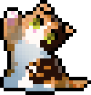

Dashboard
Espace réservé à la gestion du site de
Petit Bison
.
Se connecter avec Discord
← Retour au site
Dashboard
● Tout est enregistré
☾
Voir le site ↗
Annuler
Enregistrer
⋯
Exporter une sauvegarde (JSON)
Importer une sauvegarde…
Revenir aux valeurs par défaut
Se déconnecter